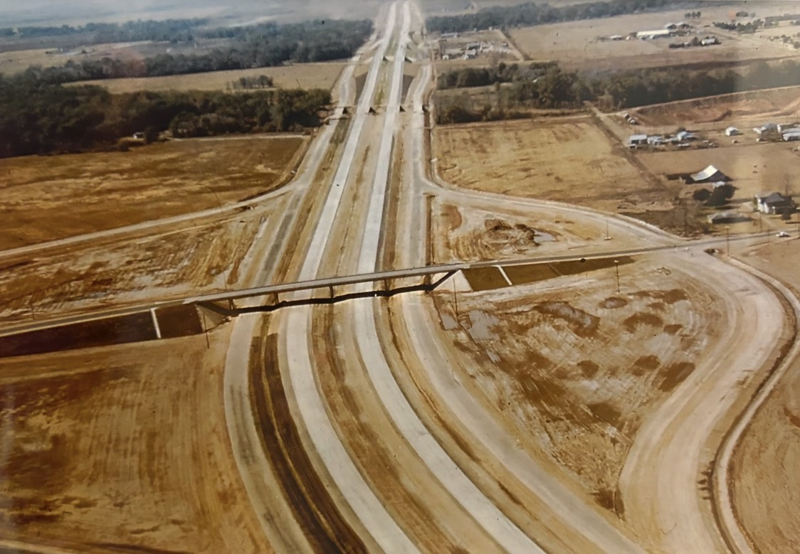
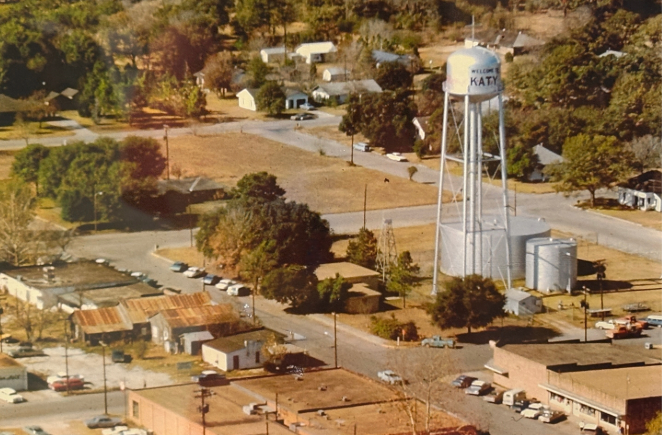

Katy's Story
A City Transformed

Katy has transformed from a quiet railroad town into one of Texas's most vibrant cities. Our project captures this journey, showcasing how the city's charm, community warmth, and southern spirit endure even as modern life continues to shape its streets and skyline.
What You'll Discover
Explore the Journey

📷 Photo comparisons across decades
🌾 Changes in land use over time
🤠 Cultural traditions past and present
🦅 Environmental and wildlife shifts